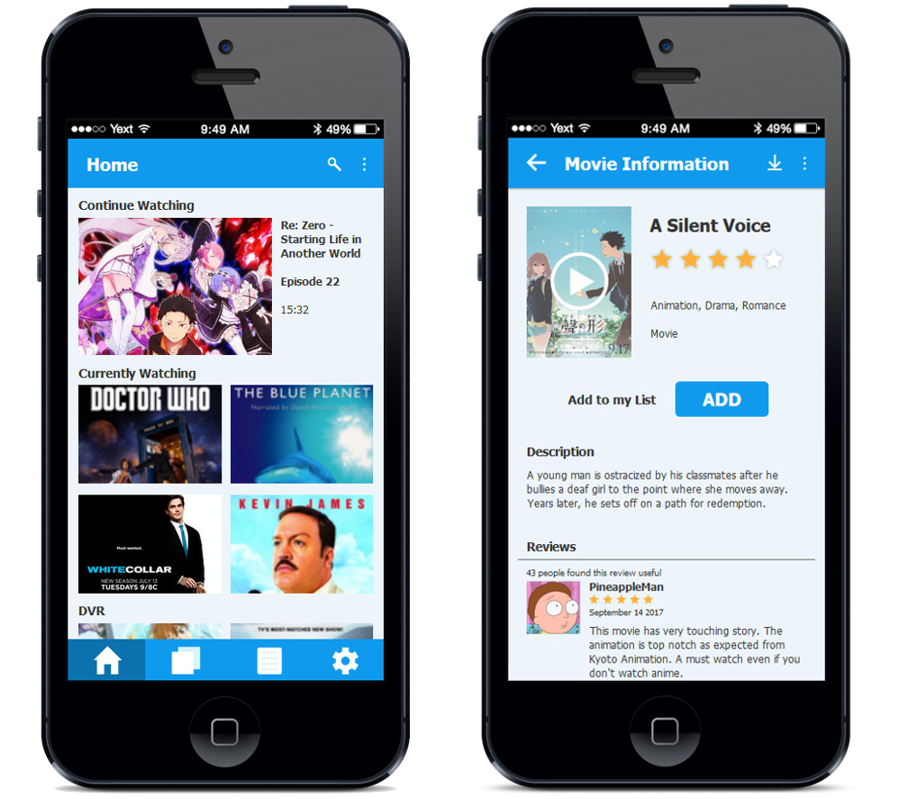

My Show List App UI Prototype
For the final assignment of my Interface Design course, I worked in a team of 2 to design an app aimed towards the audience of blue collar workers -- the working class.
Process
My roles in this project were ideation, prototyping and UI design. This project was done in an interative process where we first ideated with sketches. The fidelity was raised over time, moving to wireframes, static mockups and eventually interactive prototypes of the application while receiving feedback for revision at each step.
The functionality of the app was interated on through user testing and creating personas.
Challenges
A big challenge we faced doing this project was the large amount of work required each week. This project was done in groups of 3, however my team was left without a third member; leaving us shorthanded. I would have liked to implement much more detail into the prototypes as we were not able to achieve everything I envisioned due to lack of time.
